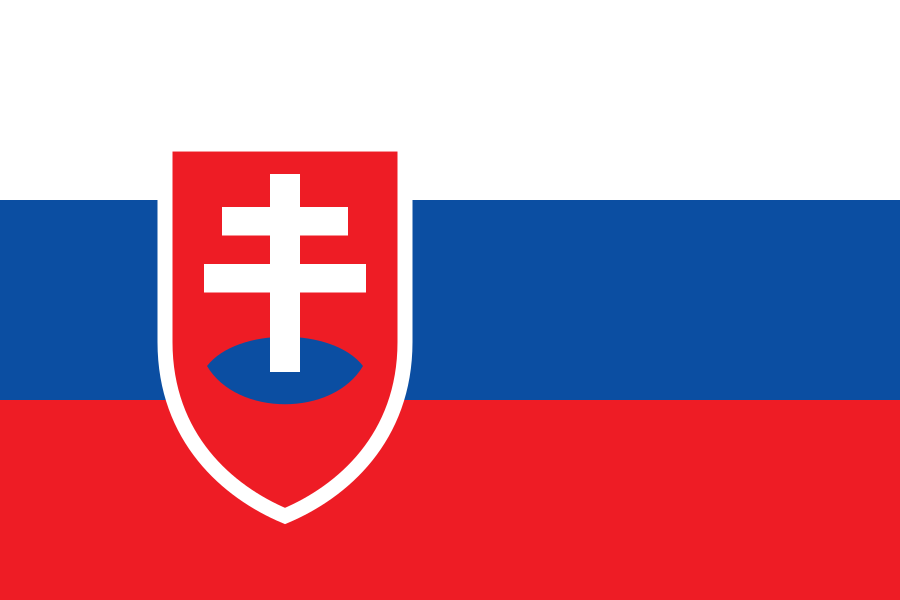

Slovakia country file
Cooperation halt – and lifted two years later
Bratislava has an official Rossotrudnichestvo representation. The Slovak case is instructive because it shows how reversible a purely political measure is: in March 2022 the culture ministry ordered an internal halt to cooperation – and lifted it in January 2024. The precise term is therefore not “closed” but factually restricted and now once again active on site.
Active official location
Legal form and treaty position open
At a glance
| Institution |
Russian Centre for Science and Culture Bratislava |
| Location |
Fraňa Kráľa 2, Bratislava |
| Register entry |
The Slovak state transparency portal lists the structure under IČO 30805121 with full name and address – but states no legal form |
| Classification |
A private register aggregator classifies it as an “international organisation/association”, foreign-controlled, with a date of origin of 19 July 1993. That is not an official register extract |
| Opening |
January 2001; a Russian operator source describes the house as a Rossotrudnichestvo representation |
| Treaty position |
Open. In 1996 the Russian government approved a draft bilateral centre agreement; the retrievable text still contains open signature fields. No signed agreement was found in Slovak or Russian portals |
| Property |
On 3 February 1998 the Russian government approved the purchase of land and building for 460,000 US dollars plus 80,000 US dollars for repairs |
| Measure 2022 |
On 2 March 2022 the culture ministry ordered its own organisations to suspend official cooperation with Russia and Belarus – an internal departmental instruction |
| Lifting |
Ministerial decision No 3/2024 of 12 January 2024, effective from 15 January 2024 |
| Status June 2026 |
Repeated public on-site events at Fraňa Kráľa 2 evidence on-site rather than merely digital operations |
“Frozen” was the operator’s word – not inactivity
Rossotrudnichestvo itself described the work in Bratislava as “frozen” in 2023 and 2024. At the same time an embassy page documents a physical event at the house on 19 November 2023. Total inactivity therefore cannot be asserted. The claim that full operations were restored in June 2025 is likewise a Russian operator statement and not independently confirmed. Reading rule: “Open” means the statement is not documented in the public sources examined. It is not proof of the contrary. EU listing, national enforcement, political non-cooperation, treaty termination and actual closure of operations are assessed separately.
Timeline
19 July 1993
A private register aggregator gives this date of origin for IČO 30805121. The state transparency portal confirms the identification number, name and address, but not the date or the legal form.
8 June 1996
By decision No 672 the Russian government approves a draft bilateral centre agreement. The retrievable text still contains open signature fields and proves neither signature nor entry into force.
3 February 1998
By order No 168-r the Russian government approves the purchase of land and building for 460,000 US dollars plus 80,000 US dollars for repairs; Russian ownership and operational management are envisaged.
January 2001
The centre in Bratislava opens. A Russian operator source describes it as a Rossotrudnichestvo representation.
2 March 2022
The culture ministry orders its own organisations to halt official academic and cultural cooperation with Russia and Belarus. This is an internal departmental instruction, not a measure against the centre.
30 March 2022
Slovakia reduces Russian embassy staff by 35. No connection to the centre is evidenced.
13 April 2023 to 24 January 2024
Rossotrudnichestvo itself describes work in several countries, and in Bratislava, as “frozen”. At the same time an embassy page documents a physical event at the house on 19 November 2023.
14 September 2023
Slovakia expels a Russian embassy employee for activity incompatible with the Vienna Convention. No connection to the centre.
12 and 15 January 2024
Ministerial decision No 3/2024 lifts the internal cooperation halt; it takes effect on 15 January.
June 2025
Rossotrudnichestvo’s public activity report for 2025, published in March 2026, states that full operations in Bratislava were restored. This is a Russian operator statement and not independently confirmed.
9 February 2026
After a meeting with the new Russian ambassador the Slovak government states that practical questions of cultural cooperation are being addressed. No express reference to the house.
2025 to June 2026
Repeated public on-site events at Fraňa Kráľa 2 evidence current on-site operations.
Legal basis
The Slovak legal position is strikingly thinly documented. The state transparency portal gives only identifiers – name, address, IČO 30805121 – but no legal form. The further classification as an “international organisation/association” comes from a private aggregator and is not an official register extract.
No bilateral centre agreement was found. In 1996 the Russian government approved a draft whose retrievable text still contains open signature fields. Neither Slovak legal and treaty portals nor the Russian official publication portal contained a signed agreement. That is a negative search finding, not proof of non-signature.
For the property, a Russian purchase authorisation of 1998 is documented. The current land register and ownership position of Fraňa Kráľa 2 is open.
Measures since 2022
The Slovak measure was an internal departmental instruction: on 2 March 2022 the culture ministry prohibited its own organisations from cooperating officially with Russia and Belarus. It was directed not against the centre but against its access to partners.
On 12 January 2024 the minister lifted that halt by decision No 3/2024, effective from 15 January. The measure thus ended after barely two years – without any legal act ever having been directed against the centre itself.
How ongoing operations were reconciled in practice with Article 2 of Regulation (EU) No 269/2014 – through authorisations, blocked accounts or service arrangements – is open. No publicly documented Slovak enforcement decision was found.
Assessment
Reversible restriction without legal closure
Slovakia shows a reversible factual restriction without any documented legal closure. A state cooperation halt can reduce reach and access to partners while the legal entity, the property and occasional activity at the house continue.
After the political lifting in January 2024, on-site activity increased markedly again. The claim of “full operations since June 2025” remains Rossotrudnichestvo’s self-presentation and is not independently confirmed.
For Germany a clear lesson follows: if a lasting effect is intended, instruments relating to legal entity, treaty, residence and accreditation, property and sanctions must be examined separately. A mere departmental instruction can easily be reversed politically – Slovakia has demonstrated exactly that.
Sources
Where the individual document could be identified unambiguously, the link points straight to it – for example to official gazettes, treaty publications and parliamentary documents. For the remaining items the underlying research file records only publisher, title and date, not the full document address; there the link points to the source domain on record. Those deep links are expressly outstanding and will be added once the citation is unambiguous.
-
Slovak transparency portal – entity IČO 30805121
Retrieved 14 August 2026; name, address and identification number, no legal form. State register and transparency source.
https://www.registeruz.sk
-
FinStat – register data for IČO 30805121
Private register aggregator; classification as an international organisation, foreign-controlled, date of origin 19 July 1993. Not equivalent to an official register extract.
https://www.finstat.sk
-
Russian government – decision No 672, 8 June 1996
Draft of a bilateral centre agreement with open signature fields. Validity open.
https://pravo.gov.ru
-
Russian government – order No 168-r, 3 February 1998
Authorisation of the property purchase. Russian primary document reproduction.
https://pravo.gov.ru
-
St Petersburg Music House – RCSC Bratislava
Russian operator and cultural source on the 2001 opening and the description as a Rossotrudnichestvo representation.
https://www.spdm.ru
-
Rossotrudnichestvo – activity report 2025, published March 2026
States the restoration of full operations in June 2025. Operator statement, not independently confirmed.
https://rs.gov.ru
-
Slovak Ministry of Culture – cooperation programme with the Russian Federation
Primary source on the bilateral cooperation framework 2018 to 2022.
https://www.culture.gov.sk
-
Slovak Ministry of Foreign Affairs – expulsion of an embassy employee, 14 September 2023
Primary source; no connection to the centre.
https://www.mzv.sk
-
Pravda – lifting of the cooperation halt, 20 January 2024
Secondary source with document extracts on decision No 3/2024 and the instruction of 2 March 2022.
https://pravda.sk
-
ICOM Slovakia – statement, 28 June 2025
Professional association source; refers to decision No 3/2024.
https://www.icom-slovakia.sk
-
Russian embassy – physical activity at the Russian House, 19 November 2023
Operator-adjacent primary source.
https://slovakia.mid.ru
-
RIA – statements on “frozen” work, 13 April 2023 and 24 January 2024
Russian status statements.
https://ria.ru
-
SRSPOL and Zväz Rusov – events of 19 May 2025, 16 and 20 June 2026
Local partner sources; direct evidence of on-site operations at Fraňa Kráľa 2.
https://www.srspol.sk
-
European Fund of Slavic Literature and Culture – opening of a Russkiy Mir centre, 30 March 2016
Local operator source on a separate structure; current catalogue membership not verified.
https://russkiymir.ru
-
Government of Slovakia – meeting with the new Russian ambassador, 9 February 2026
Primary source on the political context, without express reference to the house.
https://www.vlada.gov.sk
-
EUR-Lex – Implementing Regulation (EU) 2022/1270
EU listing of Rossotrudnichestvo of 21 July 2022.
https://eur-lex.europa.eu/eli/reg_impl/2022/1270/oj/eng
Open questions
- Was the centre agreement drafted in 1996 actually signed, and did it enter into force?
- What are the official legal form, the founder and control details, and the legal basis of the IČO allocation?
- What is the current land register and ownership position of Fraňa Kráľa 2?
- How were ongoing operations reconciled in practice with Article 2 of Regulation (EU) No 269/2014 – through authorisations, blocked accounts or service arrangements?
- What was the actual extent of operations between 2022 and June 2025?
- What is the present status of the separate Russkiy Mir partner centre opened in 2016?